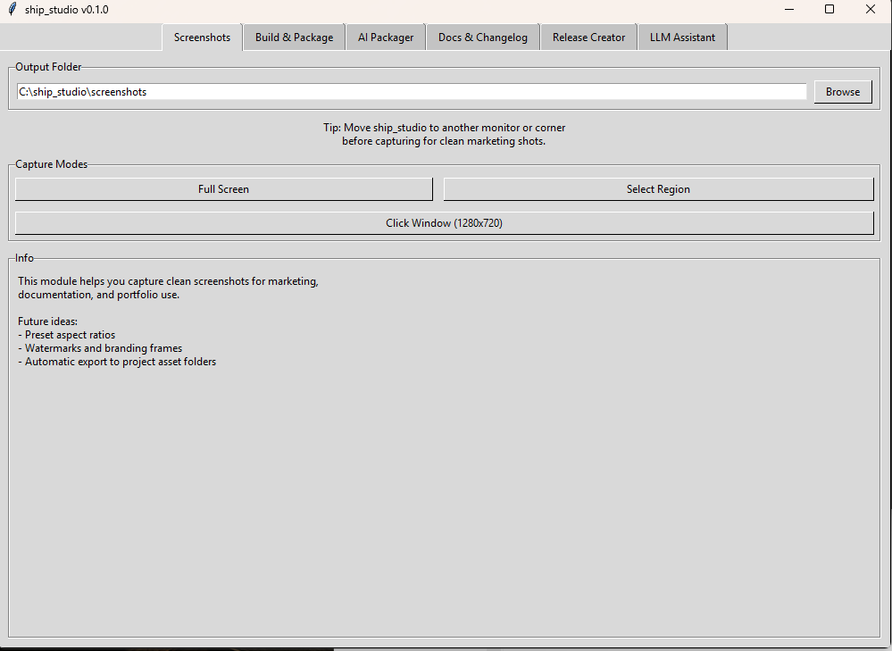
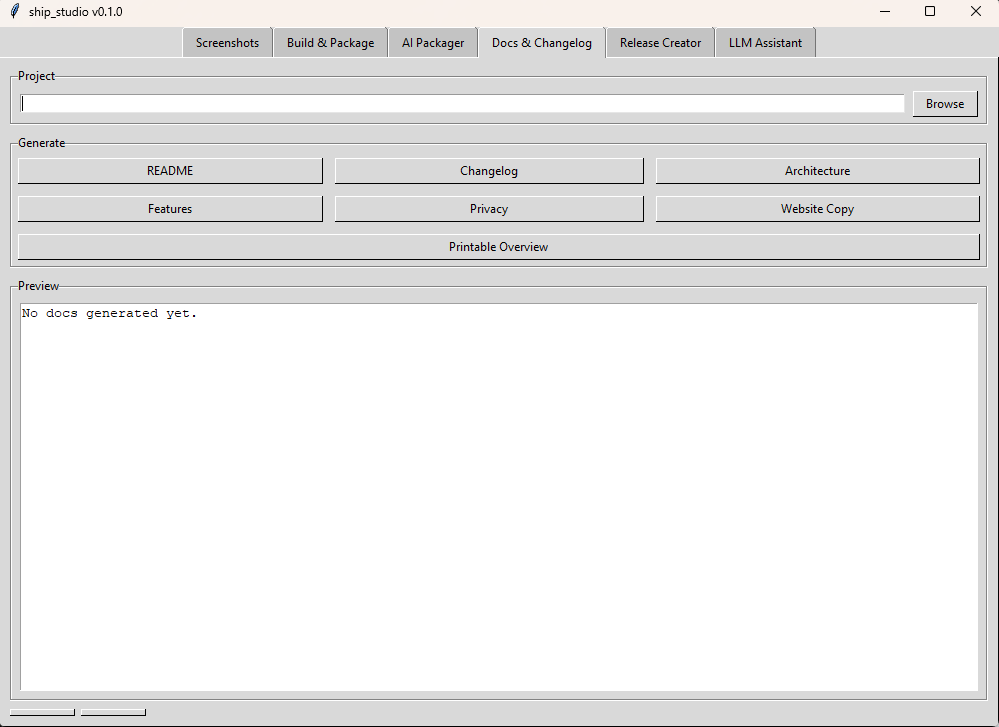
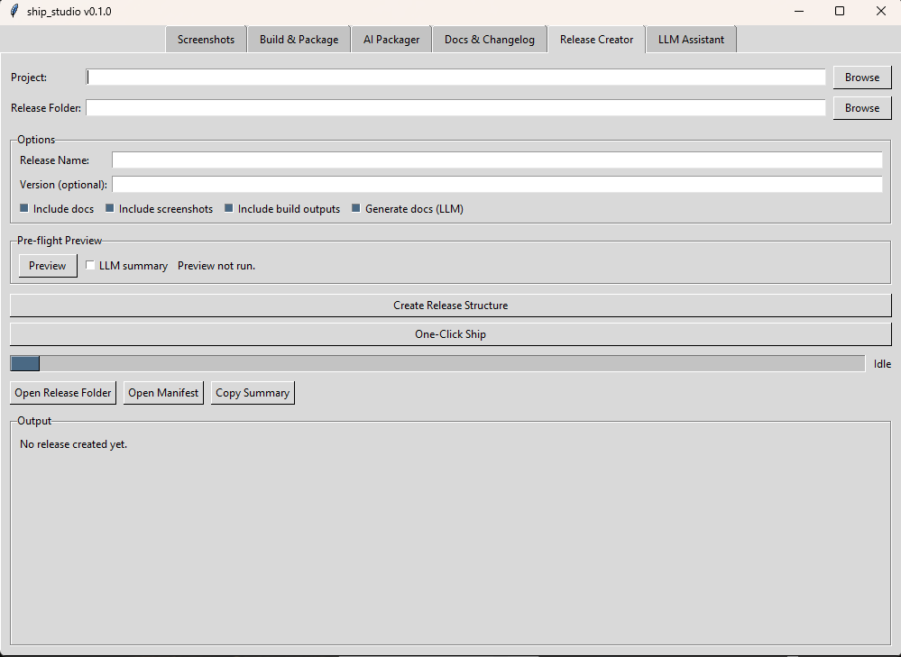
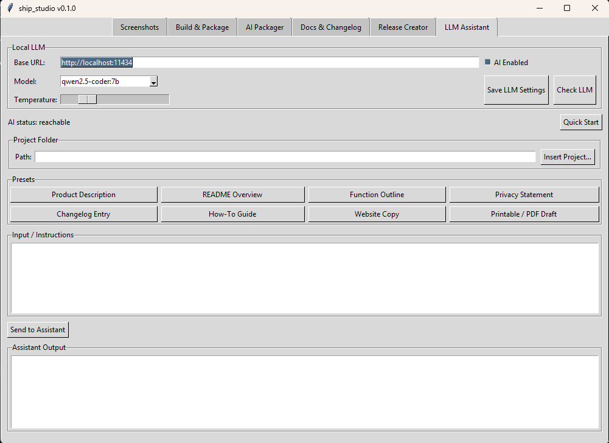

Release Workspace
Select a project folder and get a readiness score with checks for docs, license, screenshots, build outputs, installer scripts, and stale artifacts.

Free release-readiness toolkit
FORGE is for solo builders who have working code but need help with the last mile: release checks, docs, screenshots, packaging, and a clean folder people can understand.
Select a project folder and get a readiness score with checks for docs, license, screenshots, build outputs, installer scripts, and stale artifacts.
Generate basic README, changelog, privacy, and architecture notes, then capture screenshots for the release page or docs.
Detect common project types, run simple build/package actions, and create a clean release folder with a manifest.
FORGE works without AI. If enabled, it can use your configured local or compatible endpoint to help write project copy.




Version: 1.0.0
Platform: Windows
Installer size: 75.7 MB
Cost: Free
Privacy: FORGE is local-first. It reads folders you choose and writes local release files, settings, logs, and generated docs.
AI: Optional. When disabled, FORGE uses local templates. When enabled, it uses the endpoint you configure.
Feedback: Email what project type you tested, what FORGE detected correctly, and what confused you.